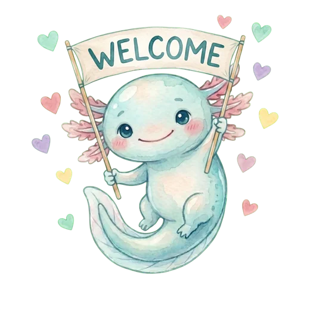

Yardım ve Destek
Merhaba! Ben Aqualo, minik su dostun. Sık sorulan soruların cevapları burada. Aradığını bulamazsan bize yazman yeterli.
Bize yaz
Soru, hata, öneri ya da sadece bir merhaba. Her mesajı okuyoruz, genelde birkaç gün içinde dönüyoruz.
Aqualo ID'ni (Profil'de, adının altında), telefon modelini ve uygulama sürümünü yazarsan çok yardımcı olur.
Sorular
Günlük hedefim nasıl hesaplanıyor?
Aqualo, kilogram başına yaklaşık 33 ml ile başlar. Hareketli bir gün için biraz (+350 ml), spor için biraz daha (+700 ml) ekler. Sıcak ya da nemli günlerde hava durumu kartı yalnızca o güne özel biraz fazlasını önerebilir.
Hedefini istediğin zaman değiştirebilirsin: ana ekranda Hedef'e dokun. Vücut bilgilerin Profil → Bilgilerim'de.
Neden her içecek aynı sayılmıyor?
Her içeceğin, suya kıyasla ne kadar iyi susuzluk giderdiğine göre bir hidrasyon katsayısı var. Örneğin sütlü içecekler hacimlerinden biraz fazla sayılır. Çay ve kahve normal miktarlarda su gibi sayılır. Ayrıntıları görmek için içecek listesinde bir içeceğe basılı tut.
Hatırlatmalar gelmiyor
- Telefon ayarlarında Aqualo'nun bildirimlerine izin verildiğinden emin ol.
- Odak / Rahatsız Etme modları bildirimleri gizleyebilir.
- Android'de pil optimizasyonu bildirimleri durdurabilir. Pil ayarlarında Aqualo'yu "Kısıtlamasız" yap.
- Profil → Hatırlatmalar'da hatırlatmaların açık ve saatlerin doğru olduğunu kontrol et.
Seriler nasıl işliyor?
Hedefini tutturduğun her gün serine bir gün ekler. Ara vermen gerekirse tatil modu (Aqualo Plus) serini dondurur, seri kırılmaz. Seri kırılırsa kısa bir süre içinde kurtarabilirsin.
Nasıl arkadaş eklerim?
Aqualo ID'ni (Profil'de, adının altında) arkadaşınla paylaş. O, Arkadaşlar → Ekle'ye girip ID'ni yazar, sen de isteği kabul edersin. İkiniz aynı gün hedefini tutturunca ortak seriniz büyür. Ortak seri 3 gün birlikte tutturduktan sonra başlar.
Arkadaşların yalnızca adını, avatarını, bugünkü ilerlemeni yüzde olarak ve serilerini görür. Kaç ml içtiğini görmez.
Dili ya da birimi nasıl değiştiririm?
Profil → Tercihler'e git. Aqualo Türkçe, İngilizce, Almanca, Japonca, Korece, Fransızca, Portekizce (Brezilya), İspanyolca (Latin Amerika), İtalyanca ve Geleneksel Çince konuşur. Birim olarak ml ya da oz seçebilirsin.
Aqualo Plus'ı nasıl iptal eder ya da geri yüklerim?
- iPhone: Ayarlar → adın → Abonelikler → Aqualo.
- Android: Google Play → profil resmi → Ödemeler ve abonelikler → Abonelikler → Aqualo.
Uygulamayı silmek aboneliği iptal etmez. Yeni telefonda geri yüklemek için Aqualo Plus ekranını aç ve Geri yükle'ye dokun. İadeleri Apple veya Google yapar.
Telefonumu değiştirdim, verilerim taşınır mı?
Kayıtların telefonunda saklanır. Yeni telefonu eskisinin yedeğinden (iCloud ya da Google) kurarsan taşınır. Arkadaşların ve ortak serilerin sunucumuzda durur. Profil'de "Hesabını koru" seçeneği varsa, eski telefonunda Apple ya da Google hesabını bağlayarak onları da yanında götürebilirsin.
Verilerimi nasıl silerim?
Verilerini sil sayfasına bak. Kısaca: Profil → Sosyal hesabı sil sunucumuzdaki her şeyi siler, uygulamayı silmek de telefonundaki her şeyi siler.
Ayrıca bkz. Gizlilik Politikası · Kullanım Koşulları